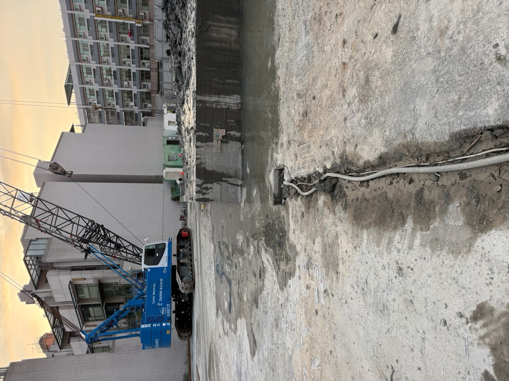
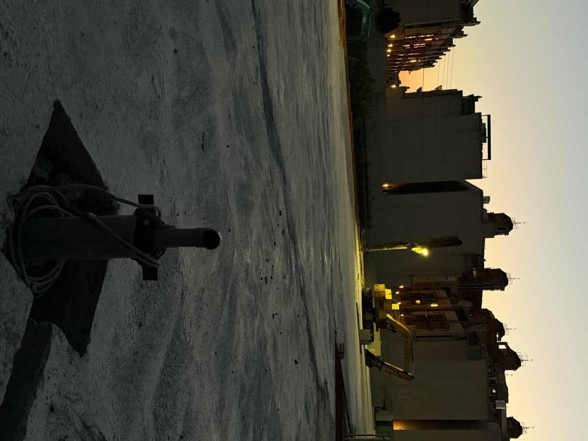

鑿井工程・鑽水井
水鑽機、衝擊式鑿井、橫向鑿井。鑽進時每 1 公尺採樣，依地層配置濾網與濾石，水量與水質更穩定。
- 家用井
- 農業灌溉井
- 工業井
- 深水井
- 井管加工・修理
- 井底攝影
SINCE 60 YEARS · CHANGHUA
家用井、農業灌溉井、工廠工業井、大樓地基降水點井。從現場勘查、水權申請、鑿井、洗井，到沉水馬達安裝試水，一次完成。


Services
水鑽機、衝擊式鑿井、橫向鑿井。鑽進時每 1 公尺採樣，依地層配置濾網與濾石，水量與水質更穩定。
開挖前設置束水降水點井，控制地下水位，減少開挖面湧水與土壤流失。
空壓式、機械式洗井。改善井水出砂、混濁、鐵質與出水量變少。
經銷美國富蘭克林沉水馬達。安裝、拉馬達維修、水陸兩用泵浦、自動啟動組、水缸更換。
協助辦理地下水權申請與水錶安裝，工廠、農地都有經驗。另有消防採水口配置。
Process
井會不會出砂、水量穩不穩，關鍵在濾水管、濾網、濾石與洗井這幾步有沒有配合地層。每一步都拍照記錄，業主、建設公司、營造公司都可以留存。


確認鑽井位置、施工動線與排水方向。濾水管、礫石、泵浦與洗井設備一次到位。
水鑽機鑽孔，每 1 公尺取土樣，記錄地層變化。
採樣是濾網與濾石配置的依據
細砂層用較密的濾網，出水層較粗則相對調整，兼顧濾水效率。
濾水管置入井內，保持垂直與正確深度，管外留空隙給濾石。
分段均勻回填，避免單側堆積或空洞，讓濾石撐滿濾水管周邊。
填得穩、均、滿
排出井內汙泥與細砂，沖洗到出水穩定，再安裝馬達試水。
Projects
近期營造工地紀錄，從點井鑽設、沉水馬達下放到井口保護。





Service Area
以彰化縣為主，台中、南投、雲林等中部地區也可承接。外縣市工程請來電確認。
FAQ
費用依井深、井徑、地層狀況與用途而定，需要先到現場看。彰化地區提供免費現場勘查，看過後再給明確報價。也可以先用 LINE 傳現場照片與地址，我們先初步評估。
依用途與用水量，多數情況需要依法申請地下水權。我們可以協助水權申請與水錶安裝，從勘查、申請到鑿井一次處理。
常見原因是濾網密度不合地層，或濾石回填不均。舊井可以先用空壓式或機械式洗井改善；新井則從每 1 公尺採樣、依地層配置濾網開始預防。
地下水位高的工地，開挖前通常需要設置降水點井束水降水，避免開挖面湧水與土壤流失。我們有營造建設大樓地基降水點井的施工經驗，可配合工地進度。
可以。拉馬達檢修、更換沉水馬達、泵浦與水缸都有承接，並經銷美國富蘭克林沉水馬達。
Contact